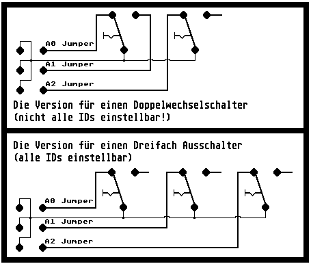

Previous
Next
TOC
Ein Verdrahtungsvorschlag (Abbildung 3)

Ist dies vollzogen, werden die Schalter in den Hohlwanddosen festge-
schraubt, das Computergehäuse verschlossen und der Abdeckrahmen samt
Schalterwippen aufgesetzt und festgedrückt. Fertig!
Es ist zwar der Aprilscherz von 1997, aber der Schaltplan stimmt und
statt der Lichtschalter kann man auch Miniaturschalter aus dem Elek-
tronikprogramm verwenden.
Kapitel SCSI ID Schalter aussen am Gehäuse montiert, Seite 3